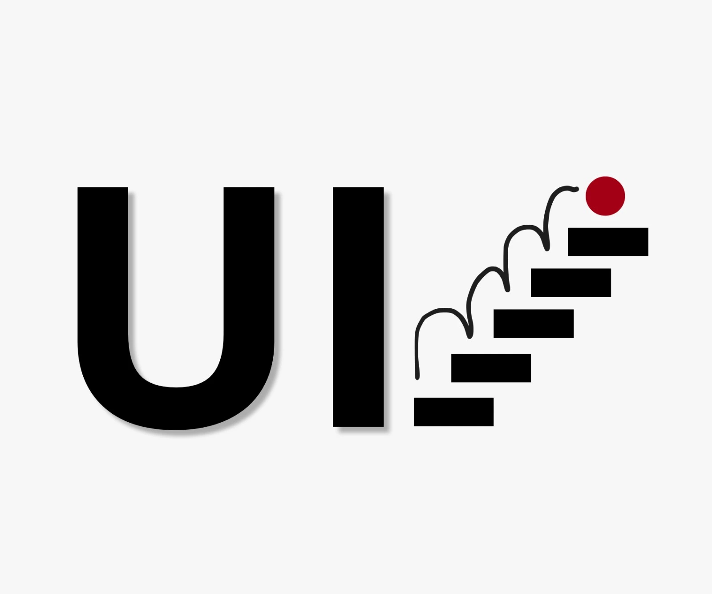

Lavender Blush
#F5E6E8
Fondo de página (tema claro) y texto (tema oscuro).
La marca combina el nombre de la aplicación con la imagen de una escalera: cada peldaño es un paso en la carrera.

"Cada paso cuenta, cada meta suma."
Cinco colores base más el rojo de Univalle como acento. Pulsa "Copiar" para llevarte el código hexadecimal.
#F5E6E8
Fondo de página (tema claro) y texto (tema oscuro).
#D5C6E0
Tarjetas y superficies en tema claro; texto secundario en tema oscuro.
#AAA1C8
Tarjetas y superficies en tema oscuro.
#967AA1
Detalles decorativos: divisores y bordes. No se usa para texto sobre fondos claros.
#192A51
Texto y títulos (tema claro), barra de navegación y footer.
#C8102E
Acento: botones, filtros activos, barras de progreso y bordes superiores. Valor provisional, falta confirmar el rojo oficial.
Variaciones del índigo y del rojo para cubrir el tema oscuro y los estados de interacción.
#101A33
Fondo de página en tema oscuro.
#0A1226
Franja inferior del footer.
#9E0C24
Botón al pasar el cursor y avisos de error.
La interfaz no usa colores sueltos: cada elemento toma el color de su rol, y el rol cambia según el tema. El botón de la barra de navegación alterna entre claro y oscuro; por defecto se respeta el tema del dispositivo.
| Rol | Tema claro | Tema oscuro |
|---|---|---|
| Fondo de página | Lavender Blush | Índigo noche |
| Tarjetas | Thistle | Lilac Ash |
| Texto y títulos | Space Indigo | Lavender Blush |
| Texto sobre tarjetas | Space Indigo | Space Indigo |
| Texto secundario | Índigo al 75 % | Thistle |
| Navegación y footer | Space Indigo | Space Indigo |
| Acción y acento | Rojo Univalle | Rojo Univalle |
| Decoración | Dusty Mauve | Dusty Mauve |
Relación de contraste calculada con la fórmula de WCAG 2.1. El texto normal necesita 4.5:1 como mínimo (AA) y 7:1 para AAA; los iconos, bordes y texto grande necesitan 3:1.
| Combinación | Muestra | Contraste | Nivel | Dónde se usa |
|---|---|---|---|---|
| Índigo sobre Blush | Aa | 11.64:1 | AAA | Texto y títulos, tema claro |
| Índigo sobre Thistle | Aa | 8.71:1 | AAA | Texto en tarjetas, tema claro |
| Índigo sobre Lilac Ash | Aa | 5.79:1 | AA | Texto en tarjetas, tema oscuro |
| Blush sobre Índigo noche | Aa | 14.26:1 | AAA | Texto y títulos, tema oscuro |
| Blush sobre Índigo | Aa | 11.64:1 | AAA | Encabezado de objetivos |
| Blanco sobre Rojo Univalle | Aa | 5.88:1 | AA | Botones y filtro activo |
| Blanco sobre Rojo oscuro | Aa | 8.29:1 | AAA | Botón en hover y avisos de error |
| Rojo sobre Blush | Aa | 4.87:1 | AA | Permitido como texto sobre el fondo claro |
| Mauve sobre Blush | Aa | 3.10:1 | Solo gráficos | Divisores y detalles, nunca texto |
| Rojo sobre Índigo | Aa | 2.39:1 | No usar | Solo como línea decorativa bajo la barra de navegación |
Dos familias de Google Fonts: Bebas Neue para los títulos H1 y Urbanist para todo lo demás.
ABCDEFGHIJKLMNÑOPQRSTUVWXYZ 0123456789
Abcdefghijklmnñopqrstuvwxyz 0123456789
Light Regular Medium Bold
| Elemento | Fuente | Tamaño | Peso | Muestra |
|---|---|---|---|---|
| Título H1 | Bebas Neue | 56 px (40 px en móvil) | 400 | UniMetas |
| Título H2 | Urbanist | 32 px | 700 | Malla curricular |
| Título H3 | Urbanist | 24 px | 700 | Mi semestre |
| Título H4 y H5 | Urbanist | 20 px | 700 | Reseñas de profesores |
| Cuerpo | Urbanist | 16 px | 300 / 400 | Consulta tu avance en la carrera. |
| Pequeño | Urbanist | 14 px | 400 | Sede principal · Salón 204 |
Resumen de la justificación de tipografía y color.
Es condensada y de mucho impacto, ideal para titulares cortos que identifican cada pantalla. Como solo tiene mayúsculas y pierde legibilidad en tamaños pequeños, se limita a los títulos principales.
Es una sans-serif geométrica y limpia, con buena altura de x y una gama de pesos del 100 al 900. Se lee bien en pantallas pequeñas y permite crear jerarquía solo con el peso y el tamaño.
Los tonos lavanda y lila dan calma y concentración; el índigo aporta seriedad académica y confianza. El rojo de Univalle ancla la identidad institucional y, al usarse solo como acento, se reconoce enseguida como "aquí se puede actuar".
Cada combinación de texto cumple al menos 4.5:1. Los colores que no llegan (Dusty Mauve sobre fondos claros, rojo sobre índigo) se reservan para decoración. Ambas fuentes son gratuitas y de licencia abierta.
Los mismos componentes con los roles de cada tema. Los estados son un ejemplo de cómo se verán las materias de la malla; los wireframes completos están en la sección Wireframes.
Tema claro
Mi semestre
Así se ve una tarjeta con su texto, sus estados y la barra de progreso.
Tema oscuro
Mi semestre
Así se ve una tarjeta con su texto, sus estados y la barra de progreso.